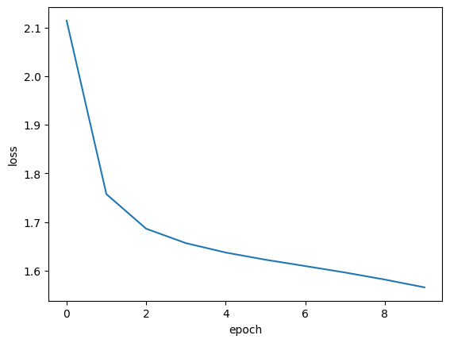

Overview
Streaming services have huge catalogs, so we built a system that learns which movies go together and suggests what to watch next.
- Platforms like Netflix hold vast catalogs, making it hard for viewers to find their next movie without guidance.
- Goal: recommend the top-k most similar movies to any title a user has just watched.
- Approach: model the catalog as a graph of movies and learn embeddings that capture co-viewing behavior.
- Frames recommendation as a self-supervised task, learning purely from historical user-movie interactions.
Methodology
flowchart LR A["Graph: Nodes + Edges"] --> B[Node Features] B --> C["Graph Neural Network layers"] C --> D[Train] D --> E["Evaluate: Node-Classification Accuracy"]
The Data (users / movies / ratings)
We used the MovieLens dataset, which records how thousands of movies were rated across hundreds of users.
- Built on the MovieLens ratings data merged with movie titles into a single DataFrame.
- 100,836 rating observations spanning 5 columns (userId, movieId, rating, title, timestamp).
- 610 unique users provide the interaction signal used to relate movies to one another.
- 9,719 unique movies form the catalog and become the nodes of the recommendation graph.
Graph Construction
We connected movies that are often watched together, with stronger links for pairs that show up as a true pattern rather than chance.
- Nodes are movies; edges connect films that are frequently watched together across all users.
- Computed item frequency per movie and pair frequency for every co-watched movie pair.
- Edge weight = PMI (pointwise mutual information) index multiplied by pair frequency.
- With a minimum edge weight of 10, the graph has an average degree of 57 connections per movie.
- High connectivity assures every movie has plausible 'watch next' suggestions available.
GNN Model
We walked randomly through the movie graph to create training sequences, then trained a small network to learn a numeric fingerprint for each movie.
- Generated biased random walks over the graph (node2vec-style hyperparameters p=2, q=1.5) to sample movie sequences.
- Applied a skip-gram model to turn walks into positive and negative (target, context) movie pairs labeled 1 or 0.
- Model uses an Embedding layer mapping target and context movies to embedding vectors.
- Takes the dot product of the two embeddings, scaled 0 to 1, to predict whether movies belong together.
- Trained as a binary classification task, yielding a learned embedding vector per movie.


Recommendations & Results
Once each movie had its learned fingerprint, we could find the five most similar films to any title a viewer enjoyed.
- Extracted the trained embedding vectors so any two movies can be compared directly by similarity.
- For a query movie, convert its title to an embedding and rank all other movie embeddings.
- Returns the top-5 most similar movies, mapped back to titles via getMovieIdByTitle().
- Self-supervised embeddings successfully surface coherent 'watch next' suggestions from co-viewing data.
- A companion Part 2 cross-checks results with clustering- and content-based recommenders on the same data.
Key Takeaways
By turning viewing history into a graph and learning from it, the system recommends movies without anyone labeling the data.
- Reframing ratings as a graph plus self-supervised task removes the need for explicit training labels.
- PMI-weighted edges capture genuine co-viewing signal, not just raw popularity, for stronger links.
- Random walks plus skip-gram embeddings are an effective, lightweight alternative to heavy GNN stacks.
- Learned embeddings generalize: similarity search instantly returns top-k recommendations for any movie.
- Built with: TensorFlow/Keras, NetworkX, NumPy, pandas, scikit-learn
Tech Stack
- pandas — data wrangling and tabular manipulation
- numpy — fast numerical arrays
- scikit-learn — modeling, pipelines, and evaluation
- seaborn — statistical visualization
- matplotlib — plotting
- tensorflow — deep-learning framework
- keras — high-level neural-network API
- scikit-surprise — collaborative-filtering recommenders
- nltk — text tokenization & stopwords
- networkx — graph / network analysis
Attribution
This project was completed as part of the MIT Applied Data Science Program (MIT IDSS / Great Learning). The program provided the case-study scaffolding; the analysis, code, and results are my own. Published with permission, for portfolio use only.